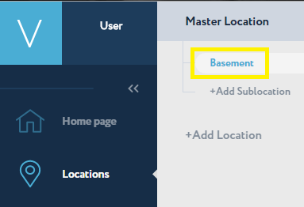
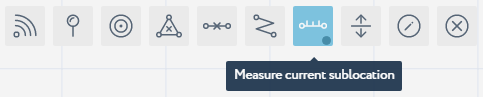
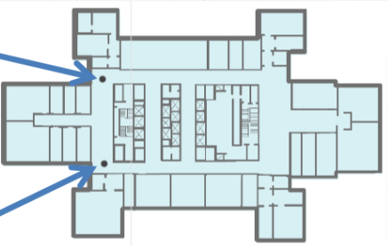
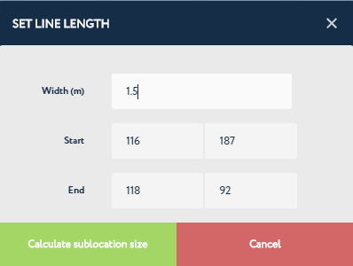

Measuring Sub-location Size¶
Measure a sub-location’s size via the tools in the Navigine Content Management System (CMS).
The aspect ratio of the image that you use with the sub-location should match the aspect ratio of the real object’s physical size, otherwise the navigation accuracy might decrease dramatically.
The following table provides information on how you can measure a sub-location’s size with the Navigine CMS. Perform these actions on each of the sub-locations you create.
In the Locations tab, click the name of the target location and then click the name of the target sub-location.

In the main window, click the Measure Current Sub-location tool’s image to active the measuring tool.

Now add two markers into the picture to measure the distance between them.

Right after you add the second marker, the SET LINE LENGH dialog appears.

Specify the distance between the two spots into the Width (m) text box. The Start and the End values display the vertical/horizontal positions of the markers you’ve just added. With this step you actually align the physical scale of your location with the scale of the image.
Click Save to save the measurement results and the set of layers you want to be available later.
Once you finish with the sub-locations size measurement, go to Adding Obstacles.